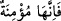
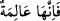

ne kadar hakîm biri olduğunu göstermektedir. Kızcağız göğe işaret edince, onun
hakkında “
”, yâni Allah’ın varlığını tasdik etmektedir, buyurmasının sebep ve
hikmeti de budur. Dikkat edilirse, “
” dememiştir. Çünkü kızcağız “O göklerde
de.. Allah’tır” (el-En’âm 6/3) âyet-i kerîmesini tasdik eylemiştir. Ancak âlim olsaydı,
Allah’ın “sadece gökte” bulunduğunu söylemezdi. Peygamberimiz (s.a.)’in bu tavrından
anlaşılan odur ki, âlimler câhillerle arkadaşlık ederken onların aklî seviyesine inerek
onların bilgisizliklerini esas almalıdır. Aksi takdirde câhil, onunla arkadaşlık
edemeyecektir. Nitekim Futûhât-ı Mekkiyye’de böyle geçmektedir.
Bu hadisten ayrıca şu sonuç da çıkar: Cenab-ı Hakk’ı yukarıda kabul etmekten O’na
cihet isnâdı gerekmiş olmaz.
İyice düşün bakalım bu hususta ne dersin
Gerisini bırakıp Ehl-i sünnete gelirsin.
Mesnevî’den:
Yaklaşmak, ne yukarı çıkmak ne de aşağı inmek.
Hakk’a yaklaşmak, varlık hapsinden kurtulmaktır.
Yok için yukarıyla aşağının ne anlamı var?
Yok için ne erken, ne geç, ne de uzak vardır.
Fakir (Bursevî) der ki: Bu hadisten anlaşıldığına göre varlıkların vücûdu ve mümkün
mahiyetleri itibarî ve izafîdir. İtibarî olanın ise gerçek bir varlığı bulunmayıp sırf
Allah’ın varlığına bağımlı olarak vardır. Çünkü gölge, gölgenin sâhibiyle ayakta durur.
Mevcud şeylerin varlığı yokluk hükmünde olduğuna göre, Yüce Allah’ın varlığının -
özel bir mekânda (eyniyyet) bulunurken diğerinde bulunmayacak şekilde- yoklukla
kayıtlanmasının anlamı nedir öyleyse?! Bunu iyi anla.
[177]. Zeylaî, Tahrîcu’l-ehâdis ve’l-âsar, nr. 1072.
[178]. Suyûtî, el-Câmiu’s-sağîr, nr. 5149.
[179]. Ebû Dâvûd, Melâhim 17; Tirmizî, Fiten 13; İbn Mâce, Fiten 20; Ahmed b.
Hanbel, el-Müsned, III, 19.
[180]. Buhârî, İsti’zân 12; Kader 9; Müslim, Kader 20; Ebû Dâvûd, Nik3ah 43;
Ahmed b. Hanbel, el-Müsned, II, 276.
[181]. Müslim, Zikr 41
[182]. Aclûnî, Keşfü’l-hafâ, II, 55.
[183]. bk. Irakî, Muğnî, I, 345.
[184]. Müslim, Mesacid 33; Ebû Dâvûd, Eymân 16; Muvatta, ıtk 8; Ahmed b. Hanbel,